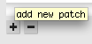

Sheet Patches
In addition to their musical contents, OMSheets embed some programmatic aspects materialized as a list of internal patches.
To make these patches visible, use the Show Sheet Patches box in the sheet editor.
Basic Operations on the Sheet Patches
A number of buttons are visible around the patch editor part of the window.
Used |  |
Sheet patches can be attached to a given sheet object at initialisation, or using the + / - buttons in the editor. There can be any number of patches attached to a sheet.
The arrow buttons at the top allow to navigate between the different patches attached to a sheet.
The arrow buttons at the bottom allow to change the order of the patches attached to a sheet by moving the current one up or down in the list.
Sheet Access
The sheet patches are like standard patches, except that they can contain a special kind of box called SHEET-ACCESS (one is created by defalut when adding a new patch with the + button in the sheet-patch window).
This box is meant to represent and allow to read or modify the contents of the objects in the sheet containing the patch.
The SHEET-ACCESS box has 4 inputs/outputs
The usual <self> input corresponds to the sheet containing the patch.
The <object-ID> input allows to target a specific object in the sheet using its ID number. When the sheet-access box is evaluated, the corresponding rectangle is highlighted in it :
<object-access> and <object-contents> allow to read and/or modify repectively the corresponding object in the sheet (a SHEET-TRACK-OBJ instance including the value and temporal location) or its contents (the value only, that is, the musical object it contains).
The Sheet patches can contain as many sheet access boxes as needed.
Note that the contents of the sheet access itself may change depending on the evaluation performed on it, so the order of evaluations may matter at the time of programming advanced relations between the objects.
In this example, the Chord-seq (ID=1) is determined from the data coming from object ID=0 (a BPF)
In this exemple, the object on track 2 (object ID=1) is determined using a sheet-track-obj in order to set its onset at the position of measure 1 in object 0 (this first voice).
The contents of object 1 is the reverse rhythm of voice 0.